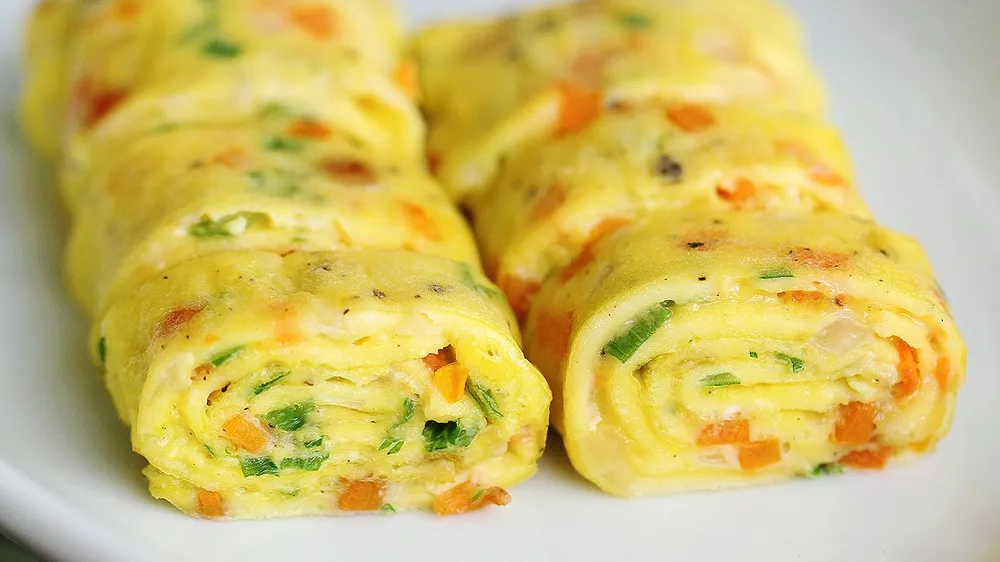
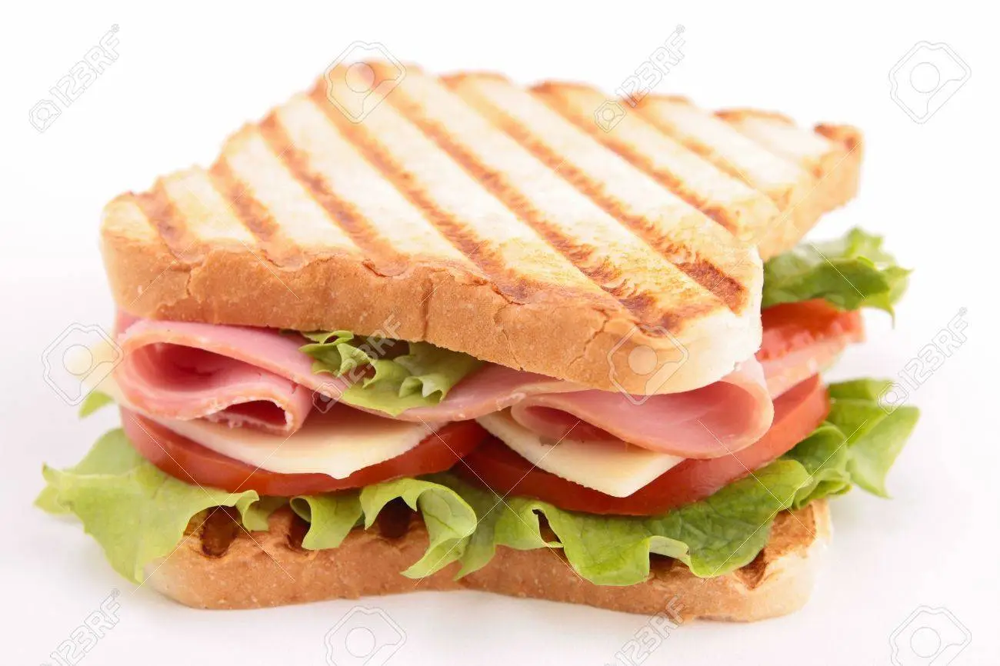
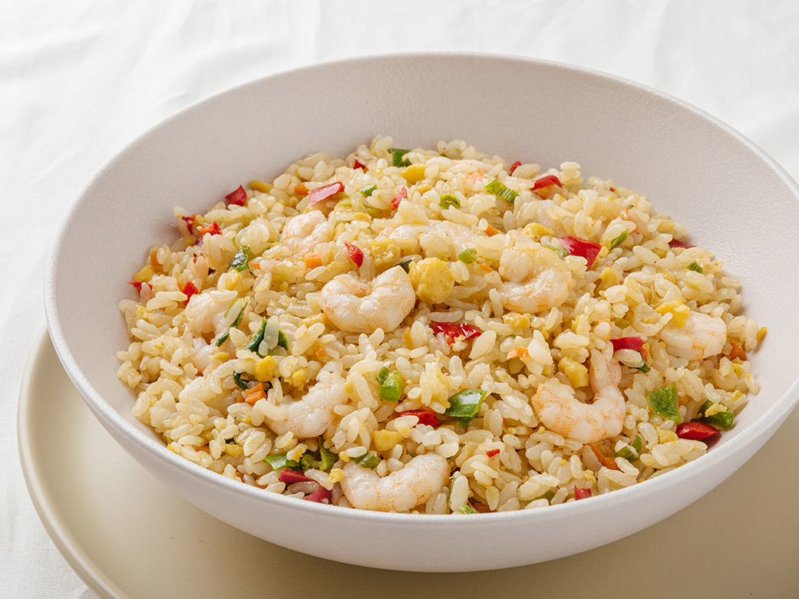

- 자신이 원하는 대로 음식을 자유롭게 음식을 조합해서 만들어볼 수 있습니다.
- 지방 함유량이 적고 조미료가 적게 들어간 요리를 통해 건강을 챙길 수 있습니다.
- 배달비, 인건비 등을 절약하여 식비를 아낄 수 있습니다.
- 나 자신에게 주는 선물 같은 느낌과 함께 만들고 난 후의 뿌듯함이 크기 때문에 자존감을 향상시킬 수 있습니다.
- 취향에 따라 공유된 레시피들을 찾아보고 도움을 얻을 수 있습니다.
- 상대방의 레시피를 참고하여 아이디어와 영감을 받을 수 있습니다.
- 상대방의 피드백을 통해 개선할 점이나 몰랐던 지식을 알게 될 수 있습니다.
|  계란말이 |  샌드위치 |  볶음밥 |